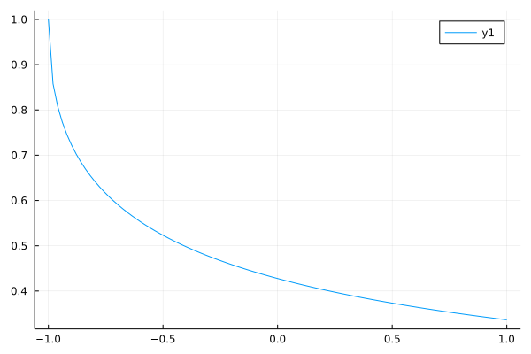

Fractional Integral Equations
The algorithms we can use to solving Fractional Integration Equations are Spectral methods with help of ApproxFun.jl.
The second-kind Abel integral equation:
\[u(x)+{_{-1}I_x^{1/2}}u(x)=1\]
While the analytical solution is
\[u(x)=e^{1+x}erfc(\sqrt{1+x})\]
To construct the problem, we can use FIEProblem to model our fractional integral problems and call an algorithm to solve the problem.
using FractionalDiffEq, Plots, SpecialFunctions
analytical(x)=exp(1+x)*erfc(sqrt(1+x))
tspan = LinRange(-1, 1, 100)
prob = FIEProblem([1, 1], [1, 0.5], 1, tspan)
sol = solve(prob, 20, SpectralUltraspherical())
solanalytical = analytical.(xx)
plot(sol, title="Second kind Abel integral equation", label="Numerical")
plot!(tspan, solanalytical, ls=:dash, label="Analytical")